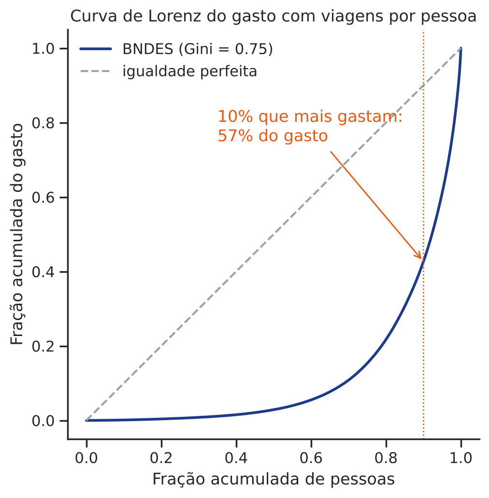
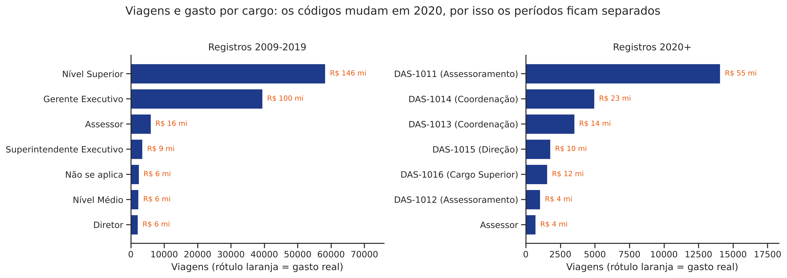
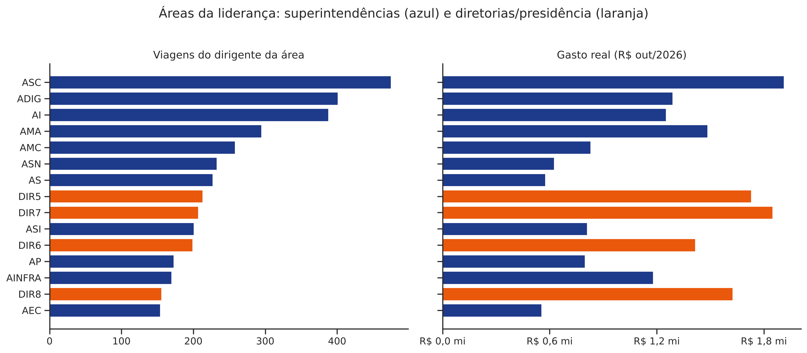

Despesas de viagem do BNDES (2009–2026): quem viaja, quem gasta e o efeito da pandemia de COVID-19
Resumo
Viagens a serviço são um custo recorrente de bancos públicos e um indicador de como suas equipes trabalham. Este estudo analisa 144.930 viagens de 5.480 empregados e dirigentes do Banco Nacional de Desenvolvimento Econômico e Social (BNDES) realizadas entre 2009 e 2026, publicadas no portal de dados abertos do banco. Um pipeline em Python (pandas e numpy) trata dois formatos de registro que convivem no mesmo arquivo, agrega 303.868 trechos em viagens, corrige os valores pelo IPCA e cruza as viagens com a base de empregados e o organograma para identificar profissão, cargo e área. Engenheiros são o grupo que mais viaja e mais gasta, com 67 viagens por pessoa e 26% do gasto real, seguidos de economistas e administradores. O gasto é concentrado: 10% das pessoas respondem por 57% do total (Gini = 0,75). A pandemia reduziu as viagens em 82% em 2020 e 88% em 2021 frente a 2019, sem nenhum registro entre abril e junho de 2020. Congressos e treinamentos foram os motivos mais afetados, enquanto as reuniões nos escritórios regionais quase dobraram depois da crise. Em 2025 o volume ainda está 6% abaixo de 2019, mas cada viagem custa 38% mais em termos reais. Os resultados indicam que o banco não voltou ao padrão anterior: viaja-se menos e de forma mais cara.
1. Introdução
O BNDES financia projetos em todo o país, e boa parte desse trabalho exige deslocamento: acompanhar obras, analisar empresas, reunir-se com governos e participar de eventos do setor. Desde 2009 o banco publica cada trecho dessas viagens, com datas, motivo e valores, o que permite observar não só quanto se gasta, mas quem viaja e para quê.
A pandemia de COVID-19 interrompeu de forma abrupta essa rotina e acelerou a adoção de reuniões remotas. Medir quanto dessa mudança permaneceu depois da crise ajuda a entender se as viagens a serviço voltaram ao padrão anterior ou se o trabalho a distância substituiu parte delas de forma duradoura.
O estudo responde a três perguntas de pesquisa:
- RQ1. Quais grupos de empregados (profissão, cargo e área) mais viajam?
- RQ2. Quais grupos concentram o maior gasto com viagens?
- RQ3. Como a pandemia de COVID-19 (março de 2020 a dezembro de 2021) alterou o volume, os motivos e o custo das viagens?
2. Metodologia e pipeline de dados
2.1 Fontes e granularidade
A base principal é o conjunto Despesas viagens do portal de dados abertos do BNDES (BNDES, 2026a), com 303.868
linhas, uma por trecho, de janeiro de 2009 a julho de 2026. Como ela não informa o setor de quem viajou,
foi cruzada com duas outras bases do mesmo portal: Empregados e Estagiários (BNDES, 2026b), que traz a profissão
(cargo de formação) e a função de 3.419 pessoas, e o Organograma (BNDES, 2026c), única base pública com a
lotação, restrita aos 34 dirigentes atuais. Os valores foram corrigidos pelo IPCA mensal obtido na API do Sistema
Gerenciador de Séries Temporais do Banco Central (BANCO CENTRAL DO BRASIL, 2026). Todas as fontes são acessadas com a
biblioteca requests, sem cadastro ou chave.
2.2 Tratamento
O arquivo de viagens, em codificação latin-1 com separador ponto e vírgula, mistura dois formatos de registro.
Até 2019, as datas são ISO e os números usam ponto decimal, com o número de diárias multiplicado por 100; a partir de 2020,
datas e números seguem o padrão brasileiro (3.902,57). Uma conversão única multiplicaria os valores antigos por
100. O pipeline identifica o formato de cada linha pela data e aplica a regra correspondente:
legado = df["datapartidaorigem"].str.contains("-", na=False) # 2009-2019 usa data ISO
for coluna in COLUNAS_VALOR:
convertido = pd.Series(np.nan, index=df.index)
convertido[legado] = pd.to_numeric(df.loc[legado, coluna], errors="coerce") # '358.62'
convertido[~legado] = _numero_brasileiro(df.loc[~legado, coluna]) # '3.902,57'
df[coluna] = convertido
df.loc[legado, "numerodiarias"] = df.loc[legado, "numerodiarias"] / 100 # '300' = 3 diárias
Com essa regra, passagens, diárias e acréscimos somam exatamente o valor total em 100% das viagens de 2009–2019, e a diária
mediana é de R$ 190 nos dois períodos, o que confirma a conversão. O segundo cuidado é a unidade de análise: valor total,
hospedagem e locação são da viagem e se repetem em cada trecho. Somar por linha inflaria o gasto em 144%, por isso os
trechos são agregados por codigoviagem antes de qualquer soma:
viagens = trechos.groupby("codigoviagem").agg(
data_partida=("datapartidaorigem", "min"),
valor_passagens=("valorpassagem", "sum"), # por trecho: soma
valor_diarias=("valordiariastrecho", "sum"),
valor_total=("valortotalviagemptpbndes", "max"), # da viagem: repetido em cada trecho
)
Os motivos foram normalizados (maiúsculas, sem acento), e o primeiro motivo listado foi adotado quando o registro traz
vários. Rótulos que mudaram de nome em 2020 para a mesma atividade (Treinamento centralizado e Treinamento no
Brasil) foram unificados como Treinamento nacional; sem isso, a categoria pareceria ter sido extinta pela pandemia.
O cruzamento com as bases de empregados e organograma é feito pelo nome normalizado, porque a base de viagens não traz
matrícula. Logo depois do cruzamento, nome e CPF (já parcialmente mascarado na fonte) são substituídos por um pseudônimo
(SHA-256), e a base tratada é gravada em data/processed/viagens.csv.gz.
Nenhuma linha é removida em silêncio. As 780 viagens de valor zero, as 152 com total divergente entre trechos e as 6.219
acima de Q3 + 1,5·IQR (calculado dentro de cada formato) ficam sinalizadas, e cada contagem é registrada em
etl_log.json. Os valores monetários são apresentados a preços de outubro de 2026.
2.3 Quebras na série
A mudança de formato em 2020 traz outras duas quebras. Os códigos de cargo mudam por completo (até 2019 predominam Nível Superior e Gerente Executivo; depois, códigos DAS), por isso o cargo é analisado separadamente em cada período, e a profissão, que é fixa por pessoa, é a dimensão usada para comparar todo o intervalo. Além disso, a partir de 2020 os componentes detalhados deixam de fechar o valor total (só 32% das viagens fecham), e viagens internacionais passam a ser registradas. Como essa quebra coincide com o início da pandemia, a RQ3 usa o número de viagens como medida principal e trata o custo com cautela.
3. Resultados e discussão
3.1 Visão geral e concentração do gasto
No período, o BNDES realizou 144.930 viagens, com gasto de R$ 421 milhões em valores reais (R$ 261 milhões nominais). A viagem típica é curta: dois trechos, ida e volta, e duas diárias. O valor total acompanha principalmente a passagem (correlação de Pearson de 0,89 nas viagens de 2020 em diante) e, em seguida, as diárias (0,73); a hospedagem quase não se relaciona com o total (0,06), porque vem zerada na maior parte dos registros. O custo, portanto, é puxado pelo deslocamento.
O gasto é concentrado em poucas pessoas. A Figura 1 mostra a curva de Lorenz do gasto acumulado por pessoa: os 10% que mais gastam respondem por 57% do total, e o índice de Gini é 0,75. Essa concentração é coerente com a natureza do trabalho: uma parcela das equipes acompanha projetos fora da sede de forma recorrente, enquanto a maioria viaja ocasionalmente.

3.2 RQ1 e RQ2: quem viaja e quem gasta mais
Por profissão. A profissão foi identificada em 75,8% das viagens; a cobertura varia de 59% em 2009 a 88% em 2026, porque a base de empregados só inclui quem está no banco hoje. Engenheiros lideram em todas as medidas (Tabela 1 e Figura 2): são o grupo com mais viagens, mais viagens por pessoa e maior gasto. Economistas e administradores vêm em seguida. As cinco carreiras técnicas de análise e acompanhamento de projetos somam 92% do gasto com profissão identificada, enquanto analistas de sistemas e técnicos administrativos, apesar de numerosos no quadro, viajam pouco.
| Profissão | Viagens | Pessoas que viajaram | Viagens por pessoa | Gasto real (R$ mi) | % do gasto |
|---|---|---|---|---|---|
| Engenheiro | 28.779 | 430 | 66,9 | 81,4 | 26,0% |
| Economista | 22.971 | 389 | 59,1 | 66,8 | 21,3% |
| Administrador | 19.471 | 379 | 51,4 | 55,9 | 17,8% |
| Advogado | 16.420 | 411 | 40,0 | 47,6 | 15,2% |
| Contador | 13.746 | 344 | 40,0 | 37,4 | 11,9% |
| Analista de Sistemas | 3.791 | 248 | 15,3 | 10,4 | 3,3% |
Tabela 1: Viagens e gasto real por profissão, 2009–2026 (viagens com profissão identificada).

Por cargo. Na base de viagens, o cargo descreve o nível na estrutura. Até 2019, profissionais de Nível Superior fizeram 58,3 mil viagens (R$ 146 milhões) e Gerentes Executivos, 39,5 mil (R$ 100 milhões). A partir de 2020, com a nova codificação, o maior grupo é DAS-1011 (assessoramento), com 14,1 mil viagens e R$ 55 milhões (Figura 3). Nos dois períodos, os cargos de base respondem pela maior parte do volume, e os de direção, pelos maiores custos por viagem.

Por área. O organograma permite identificar a área apenas dos 34 dirigentes atuais, cujas viagens são 3,7% do total; o resultado descreve a liderança, não o banco inteiro. Entre eles, a superintendência ASC é a que mais viaja (475 viagens) e mais gasta (R$ 1,9 milhão), seguida de ADIG e AI (Figura 4). Superintendentes viajam mais por pessoa (164 viagens, contra 140 dos diretores), mas a viagem mediana de um diretor custa 59% a mais: R$ 4,8 mil contra R$ 3,0 mil.

Por motivo. Acompanhamento de projeto (20% das viagens) e reuniões em órgãos governamentais (18%) são os motivos mais frequentes; as reuniões em órgãos do governo concentram o maior gasto, R$ 80,9 milhões. Os dez motivos principais respondem por 90% das viagens.
3.3 RQ3: o efeito da pandemia
A Figura 5 mostra a série mensal. As viagens já vinham caindo antes da pandemia, de 13,0 mil em 2011 para 7,7 mil em 2019 (−41%), mas a ruptura de 2020 é de outra ordem: entre abril e junho de 2020 não há nenhuma viagem registrada, e o ano fecha 82% abaixo de 2019. Em 2021 a queda chega a 88%, e só 229 pessoas viajaram, contra 1.540 em 2019 (Tabela 2).

| Ano | Viagens | vs. 2019 | Pessoas que viajaram | Gasto real (R$ mi) | Custo mediano real |
|---|---|---|---|---|---|
| 2019 | 7.671 | — | 1.540 | 20,6 | R$ 2.494 |
| 2020 | 1.381 | −82,0% | 607 | 4,7 | R$ 2.680 |
| 2021 | 918 | −88,0% | 229 | 3,8 | R$ 2.884 |
| 2022 | 3.855 | −49,7% | 988 | 18,4 | R$ 3.566 |
| 2023 | 5.489 | −28,4% | 1.314 | 25,4 | R$ 3.725 |
| 2024 | 5.790 | −24,5% | 1.268 | 27,2 | R$ 3.674 |
| 2025 | 7.204 | −6,1% | 1.657 | 30,6 | R$ 3.439 |
Tabela 2: Volume, pessoas e custo das viagens antes, durante e depois da pandemia (valores reais de out/2026).
A pandemia não afetou os motivos da mesma forma (Figura 6). Congressos, feiras e seminários caíram 97%, e treinamentos, 95%: são atividades que podem ser feitas a distância, embora os dados não registrem o formato em que ocorreram. Reuniões nos escritórios regionais foram as que menos caíram (−61%) e, em 2023, quase dobraram em relação a 2019 (737 contra 372). Congressos voltaram rapidamente (−8% em 2023), mas fomento (−59%), acompanhamento de projeto (−44%) e treinamento (−54%) seguiam bem abaixo do nível anterior, o que sugere que parte dessas atividades passou a ser feita a distância.

O custo seguiu o caminho oposto ao do volume (Figura 7). Em valores reais, a viagem mediana passou de R$ 2.494 em 2019 para R$ 3.725 em 2023 (+49%) e R$ 3.439 em 2025 (+38%), e o gasto anual de 2025 (R$ 30,6 milhões) já supera o de 2019, com menos viagens. A correção pelo IPCA descarta a inflação como explicação, mas esse salto coincide com a mudança no formato de registro, em que o total passa a incluir itens não detalhados nas colunas de componentes; por isso não é possível separar com segurança quanto do aumento é encarecimento real e quanto é mudança contábil.

4. Conclusão
Engenheiros, economistas e administradores, as carreiras ligadas à análise e ao acompanhamento de projetos, são os grupos que mais viajam e mais gastam no BNDES, e o gasto se concentra em uma parcela pequena das pessoas. Entre os dirigentes, superintendentes viajam mais, enquanto diretores fazem viagens mais caras. A pandemia interrompeu as viagens por três meses e reduziu o volume em quase 90% em 2021; cinco anos depois, o banco ainda viaja menos do que em 2019, mas cada viagem custa mais em termos reais. Os motivos que exigem presença física, como reuniões regionais e congressos, recuperaram-se primeiro; treinamento e fomento, não.
Limitações. O portal não publica a lotação de todos os empregados, e a análise por área cobre só a liderança atual. As bases de empregados e organograma são retratos de hoje, o que reduz a cobertura nos anos antigos e atribui a cada dirigente a área atual, não a da época da viagem. Os cruzamentos por nome podem falhar em grafias divergentes. A mudança de formato de 2020 impede comparar cargos entre os períodos e torna a comparação de custos menos precisa.
Trabalhos futuros. Solicitar ao BNDES, via Lei de Acesso à Informação, a lotação histórica dos empregados permitiria responder à RQ1 por área para todo o banco. Também seria possível comparar o padrão de viagens com o de outros órgãos federais publicado no Portal da Transparência e investigar a relação entre viagens e o volume de desembolsos por região.
5. Disponibilidade dos dados e princípios FAIR
Declaração de aderência FAIR (Wilkinson et al., 2016)
- Findable (localizável): repositório público com
README.mdcontendo resumo executivo, palavras-chave, autoria, disciplina e links permanentes para cada fonte original no portal do BNDES. - Accessible (acessível): todas as fontes são abertas e baixadas pelo próprio pipeline com
requests, sem cadastro, chave ou serviço pago; o artigo está publicado no GitHub Pages. - Interoperable (interoperável): base tratada em CSV comprimido (
.csv.gz, UTF-8) e dicionário de variáveis com tipo, formato, significado e origem emdata/data_dictionary.md. - Reusable (reutilizável): código sob licença MIT, dados sob ODbL 1.0 (licença das fontes do BNDES), texto e figuras sob CC BY 4.0; dependências congeladas em
requirements.txte cada etapa do tratamento registrada emetl_log.json.
Para reproduzir o pipeline e a análise do zero:
git clone https://github.com/mochilicius/g2lingprog.git
cd g2lingprog
python -m venv .venv && source .venv/bin/activate # Windows: .venv\Scripts\activate
pip install -r requirements.txt
python -m src.etl # baixa as fontes e gera data/processed/viagens.csv.gz
jupyter nbconvert --to notebook --execute --inplace notebooks/analise_exploratoria.ipynb6. Referências
- BANCO CENTRAL DO BRASIL. Sistema Gerenciador de Séries Temporais: série 433, Índice Nacional de Preços ao Consumidor Amplo (IPCA). Brasília, 2026. Disponível em: https://api.bcb.gov.br/dados/serie/bcdata.sgs.433/dados?formato=json. Acesso em: 12 nov. 2026.
- BNDES. Despesas viagens. Rio de Janeiro: Portal de Dados Abertos do BNDES, 2026a. Disponível em: https://dadosabertos.bndes.gov.br/dataset/despesas-viagens. Acesso em: 12 nov. 2026.
- BNDES. Empregados e Estagiários do BNDES. Rio de Janeiro: Portal de Dados Abertos do BNDES, 2026b. Disponível em: https://dadosabertos.bndes.gov.br/dataset/empregados. Acesso em: 12 nov. 2026.
- BNDES. Organograma. Rio de Janeiro: Portal de Dados Abertos do BNDES, 2026c. Disponível em: https://dadosabertos.bndes.gov.br/dataset/organograma. Acesso em: 12 nov. 2026.
- HARRIS, Charles R. et al. Array programming with NumPy. Nature, v. 585, p. 357–362, 2020.
- HUNTER, John D. Matplotlib: a 2D graphics environment. Computing in Science & Engineering, v. 9, n. 3, p. 90–95, 2007.
- McKINNEY, Wes. Python for data analysis: data wrangling with pandas, NumPy, and Jupyter. 3. ed. Sebastopol: O'Reilly Media, 2022.
- WASKOM, Michael L. seaborn: statistical data visualization. Journal of Open Source Software, v. 6, n. 60, p. 3021, 2021.
- WILKINSON, Mark D. et al. The FAIR Guiding Principles for scientific data management and stewardship. Scientific Data, v. 3, p. 160018, 2016.